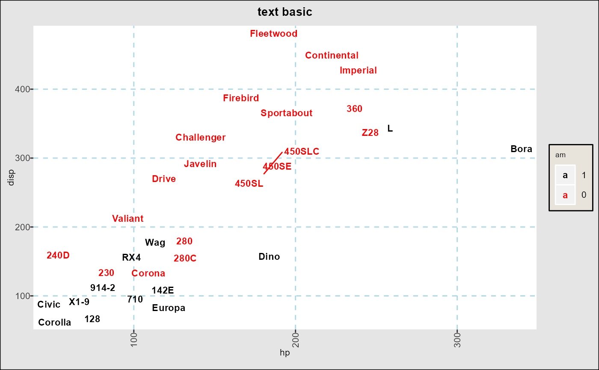
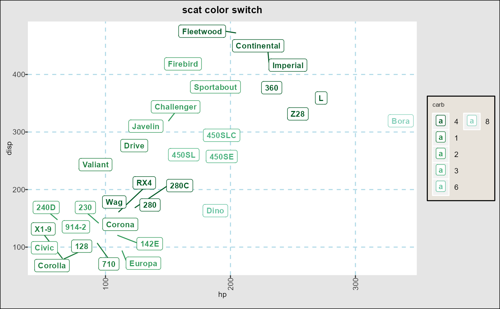
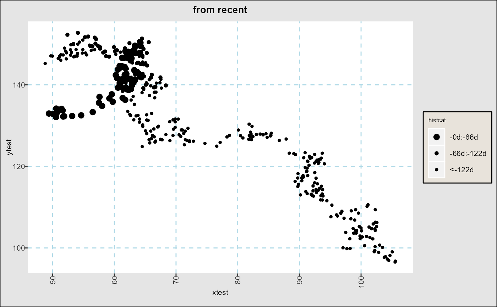
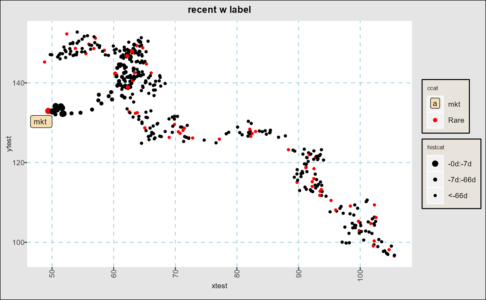
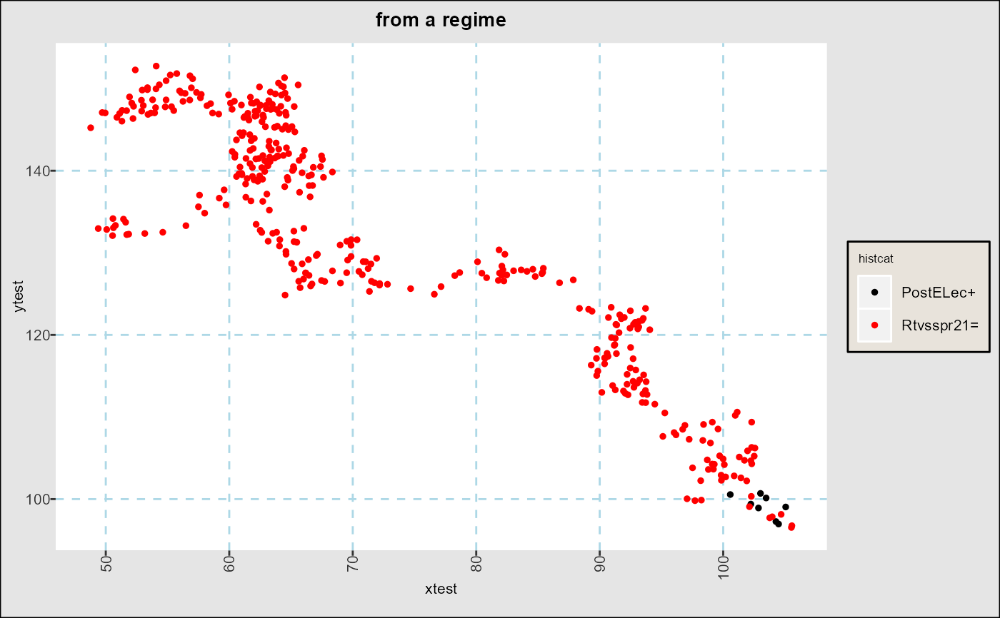
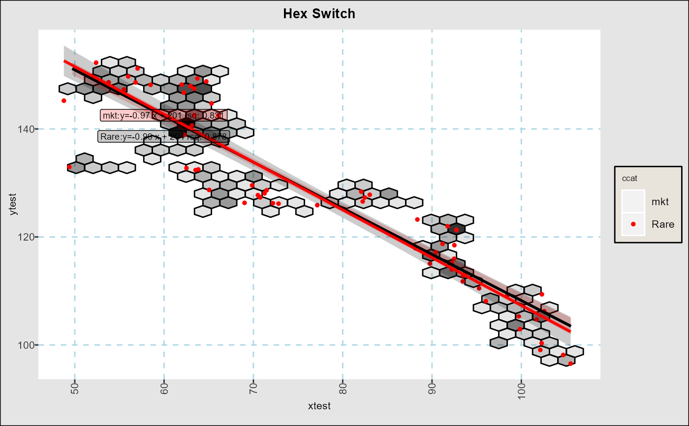
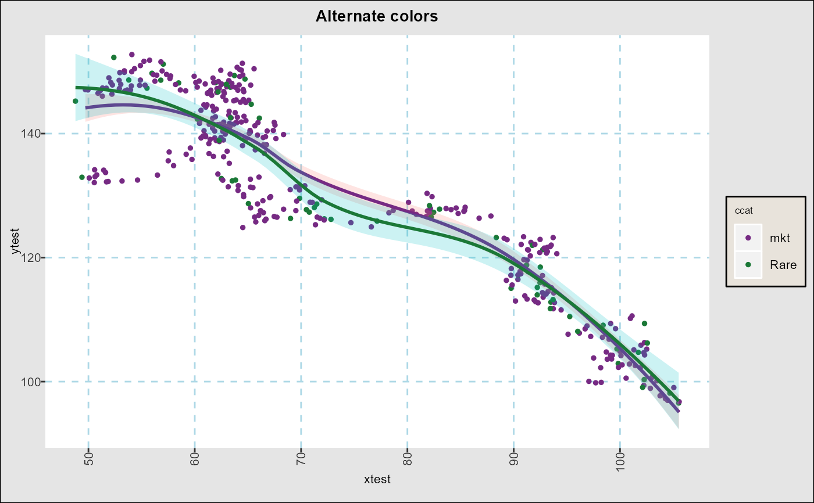
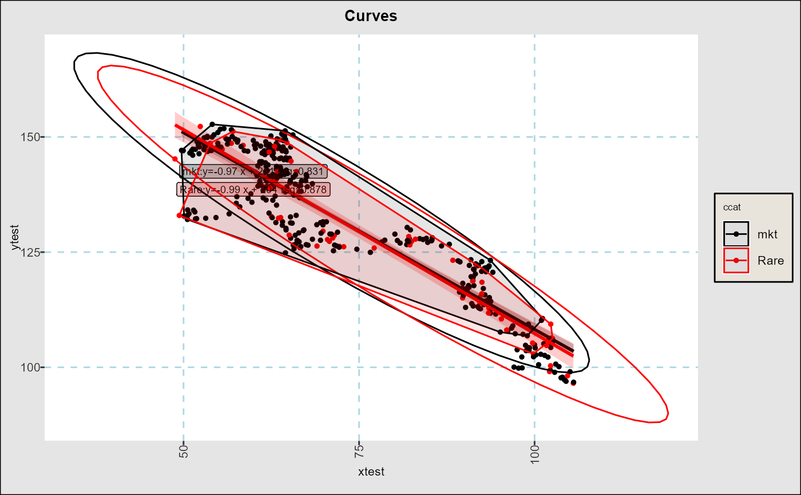
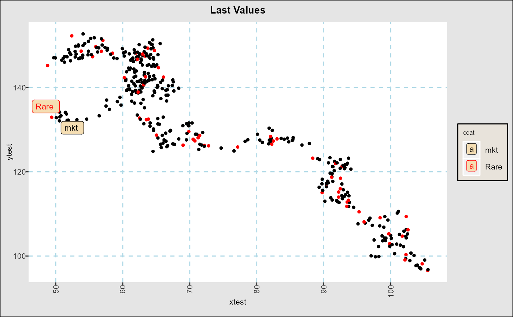
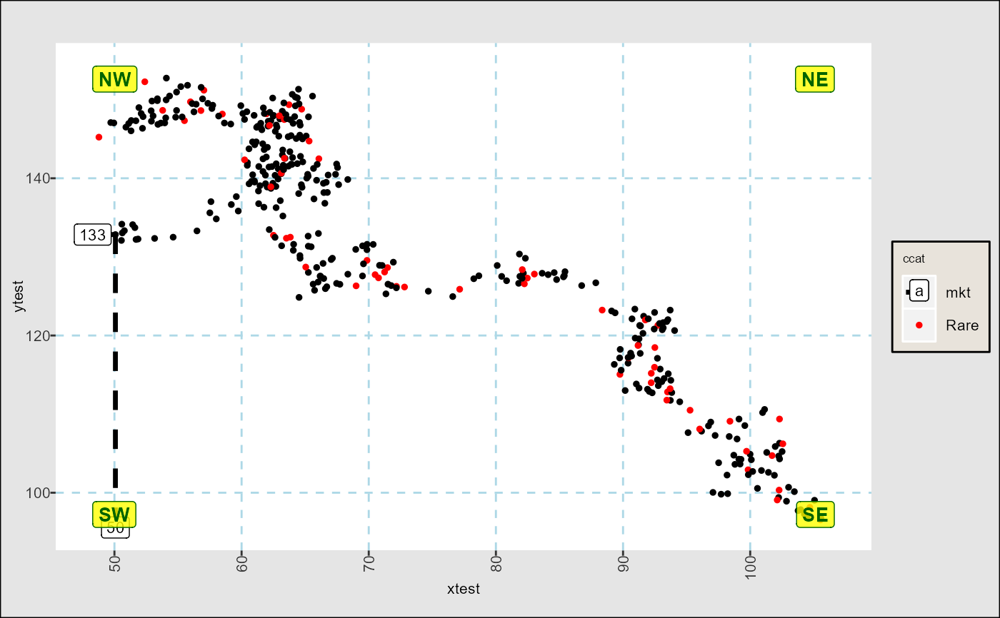

R/scat_ggplot.R
fg_scatplot.RdPlots bivariate plots with some time-series specific enhancements. Rather than programmatically describing graph aesthetics, a simple formula-based approach is used. This approach allows quick specification of many customizaton options.
fg_scatplot(indata,plotform,type="scatter",datecuts=c(7,66),
noscales="",xdecoration="",ydecoration="",annotatecorners="",
tsize=3,psize=1,n_color_switch=7,n_hex_switch=400,repel=TRUE,jitter=c(0,0),
title="",subtitle="",caption="",axislabels="",
boundbox=c(),boundboxtype="",gridstyle=NA_character_,legendinside=FALSE,
tformula=formula("y~x"),returnregresults=FALSE,
keepcols="", meltvar="variable",melted=NULL)data.frame with columns for (x,y) coordinates and possibly other categorical data or a date column. Alternatively,
indata can be in long format with meltvar present. Note that aesthetic characteristics (if used) must be present for both
long and wide input formats.
A text formula describing how to set up the graph. The formula is of the general form
y ~ x + option:<column_name>,<aesthetic category> + ...
where y is plotted against x and aesthetics for each point are controlled by one or more option clauses each followed
by zero or more optional parameters. If the option applies to all points then the first parameter column_name must be in indata.
By default, points or symbols are plotted. By general category, the options are
Aesthetic options:
color:column<,aes_set> sets the color of each point or label by data in column
symbol:column<,aes_set> sets the symbol or shape cof each point or label by data in column
size:column<,aes_set> sets the size of each point by the data in column
Date specific options:
doi:recent partitions data by number of days in datecutsprior to the last day in indata
doi:<doiset> partitions data by date ranges obtained from dates of interest set <doiset>. See fg_get_dates_of_interest()
point:<value|label|anno><all> adds highlights for either the last date in indata or the last
date for each group (if all). value gives coordinates, label the label in the color column, while anno
adds lines to each axis.
Text options:
[text|label|labelhilight|tooltips]:column<,aes_set> : Plots the text in character column as text (without border),
label (with border), filled in label, or mouse-over tooltip. (See details)
Other annotations:
ellipse adds an ellipse around the points using ggplot2::stat_ellipse()
hull<:quantile> draws a convext hull around points with <quantile> (default 0) points removed. (See details)
xline<:level=0> draws a vertical line at level
yline<:level=0> draws a horizontal line at level
grid:<dotted|dotted_x|dotted_y|none> formats background grids
character string for the type of graph to plot:
scat plots points, text or labels
lm<one><noeqn><nofill> adds linear regression lines per color category or across all points (lmone).
loess<one><noeqn>adds loess line per per color category or across all points (loessone)
density Creates a density plot
if noeqn is part of the string, equations are suppressed. If one is part of the string, no subcategories are used. `nofill“
removes confidence bands.
list of integers (Default c(7,66) for days prior to last date to make date classes. (See examples and doi:recent as above.)
String to suppress guides with any of <color|size|symbol>
2 element string list to add to either side of an axis label.
4 element string list to add notes to each of 4 quadrants of the graph. See examples.
default text size (with some scaled variations for graph parts such as titles)
default point size.
(Default 7): Number of distint color categories beyond which colors are taken from gradient scales,
unless a color set is specified in a color part of plotform
(Default 400): Number of data points beyond which points are replaced with binned hexagons (see geom_hex())
(Default TRUE) Text and labels are plotted using ggrepel()
Jitter parameters used by geom_text() or geom_label() if repel=FALSE. Default is no jitter.
Title to add to graph
Subtitle to add to graph
Caption to add to graph
Semicolon separated string with x and y labels, e.g date;OAS
string describing how to use bounding boxes. If "identify" is part of the string, then data
is truncated to the calculated bounding box and notations to that effect are added to the graph. If not, then points
outside the box are dropped.
prob|probidentify calculates bounding boxes from quantilies of x and y data. See vignette for details.
value|valueidentify are minimum and maximum values of x and y axes to show.
If boundbox is a list of two numbers, the y axis is truncated to those values,
If boundbox is a list of 4 numbers c(xmin,xmax,ymin,ymax) data is truncated to that box.
String in <dotted|dotted_x|dotted_y|none> to contol grids as in grid option above.
(Default: TRUE) Put all guides inside the graph.
(Default y~x) Formula used within lm or loess stats .
Return a two element list c(plot,regression data.frame). Only available for linear models, and uses the first amoung
options c("color","symbol","size","alpha") as grouping variables
list of indata columns to be kept with the graph data, useful for further faceting using ggplot2::facet_wrap()
(Default "variable") If indata is melted, then this is used to create x and y categories.
(Default:NULL) If FALSE forces data not to be melted if meltvar in indata
A ggplot2::ggplot() object with desired graph, or a ggiraph::girafe() object if tooltips is in the plotform string.
indata can either be in wide ('date' ,'series1',...) format or normalized (long) format
('date','variable','value',...) format. This package infers date columns names from column types and casts or
pivot_wider to get x and y columns. Note that aesthetic characteristics (if used) must be present for both
long and wide input formats.
Default aesehetic sets used for portions of the graph each have their own names, which can be seeing by running
fg_print_aes_list() and modified or added to using fg_update_aes(). The default theme can be modified using
fg_replace_theme(). Both aesthetic changes and theme changes are persistent across R sessions.
Use of doi: in plotform string supercedes color aesthetics otherwise specified. (Is this true?)
If tooltips are used, the result of fg_scatplot must be viewed using print(girafe(ggobj=fg_scatplot(...)))
See ggiraph::geom_point_interactive()
Winsorized hulls with quantile cutoff q are formed using the closest (by euclidean distance) 1-q points to the
geograpic center of the entire set.
Captions are added if data is truncated or omitted by the bounding box procedure.
# Simple text examples
require(data.table)
dt_mtcars=data.table(datasets::mtcars)
dt_mtcars$id=lapply(rownames(datasets::mtcars),\(x) last(strsplit(x," ")[[1]]))
fg_scatplot(dt_mtcars,"disp ~ hp + color:am + text:id","scatter",title="text basic")

fg_scatplot(dt_mtcars,"disp ~ hp + color:carb + label:id","scatter",
n_color_switch=0,title="scat color switch")

# Plotting data with dates:
set.seed(1); ndates <- 400; dlyvol <- 0.2/sqrt(260)
rtns <- cbind(cumsum(rnorm(ndates,sd=dlyvol)),cumsum(rnorm(ndates,sd=dlyvol)))
dttest <- data.table(date=seq(as.Date("2021-01-01"),as.Date("2021-01-01")+ndates-1),
xtest=100*(1+rtns[,1]),ytest=100*(1+rtns[,2]),
ccat=fifelse(runif(ndates)<=0.2,"Rare","mkt"))
# Making categories out of recent data
fg_scatplot(dttest,"ytest ~ xtest + doi:recent","scatter",datecuts=c(66,122),title="from recent")

fg_scatplot(dttest ,"ytest ~ xtest + color:ccat + doi:recent + point:label","scat",
datecuts=c(7,66),title="recent w label")

# Makes categories out of event sets from [fg_get_dates_of_interest()]
fg_scatplot(dttest,"ytest ~ xtest + doi:regm","scatter",title="from a regime")

# Point graphing switches.
fg_scatplot(dttest,"ytest ~ xtest + color:ccat","lm",n_hex_switch=100,title="Hex Switch")

# Quick changes to aesthetic sets
fg_scatplot(dttest,"ytest ~ xtest + color:ccat,altlines_6","loess",title="Alternate colors")

# Extra summarizatons
fg_scatplot(dttest,"ytest ~ xtest + color:ccat + hull:0.1 + ellipse","lm",title="Curves")

# Annotations
fg_scatplot(dttest,"ytest ~ xtest + color:ccat + point:labelall","scat",title="Last Values")

fg_scatplot(dttest,"ytest ~ xtest + color:ccat + point:anno","scat",annotatecorners="NW;NE;SE;SW",
legendinside = FALSE)
